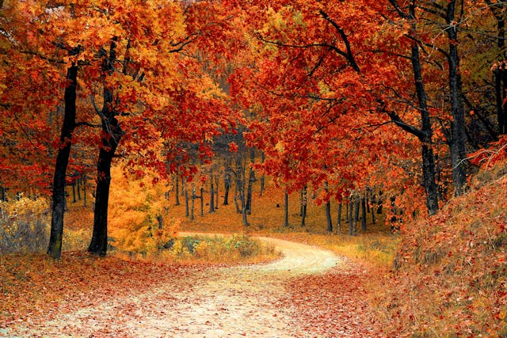

Nature's Transition
As autumn fades and winter approaches, nature undergoes a quiet but powerful transformation. The vibrant reds, oranges, and yellows of fall leaves slowly give way to bare branches, as trees shed their foliage in preparation for the cold ahead. Crisp air replaces the mild warmth of autumn, and the landscape shifts from colorful to calm, blanketed eventually in frost or snow. Animals begin to migrate or retreat into hibernation, sensing the coming stillness. This transition is both gentle and profound - a reminder of the cycles that shape our world, where rest follows activity, and silence prepares the ground for renewal.

Temperature Changes
Daylight becomes shorter, and the air cools. Animals begin storing food, and humans prepare for the holidays and colder weather.
Color Fades

Vibrant reds and oranges of fall fade to grays and whites as snow begins to fall in many regions in Canada.